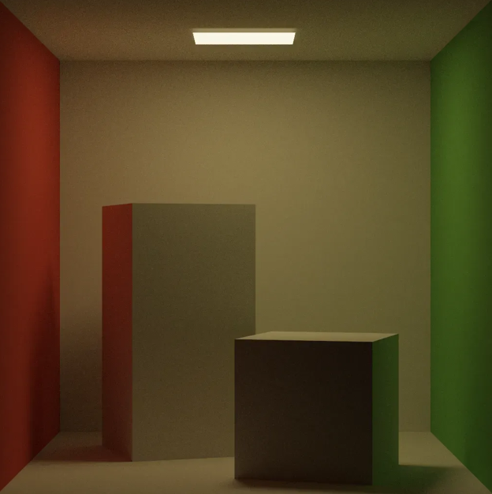
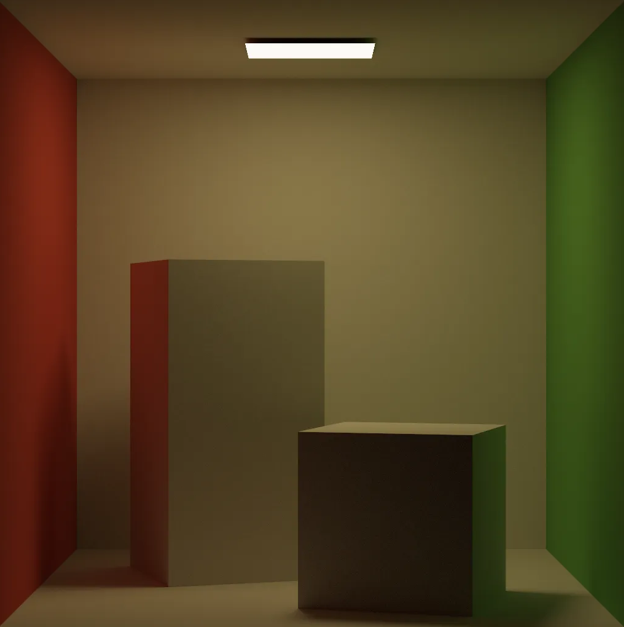
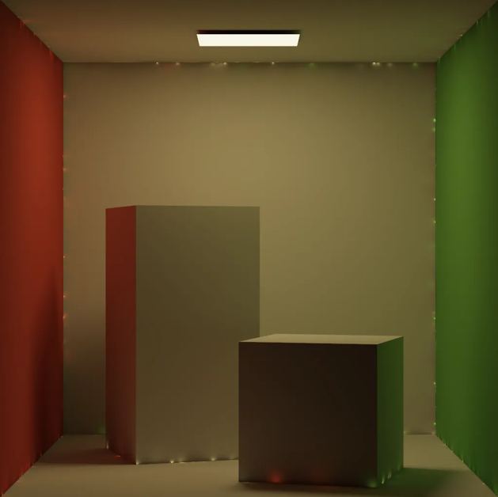
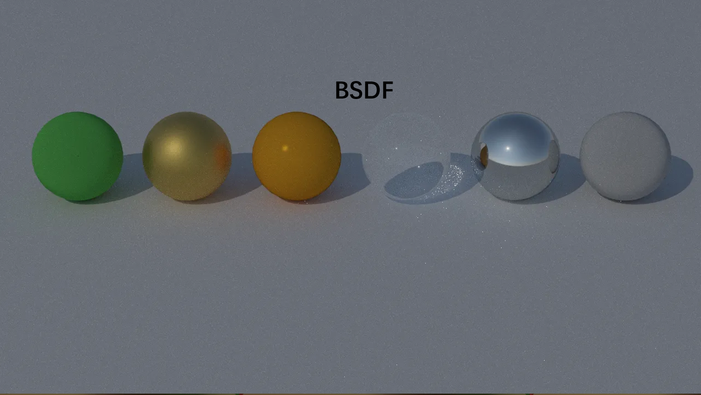
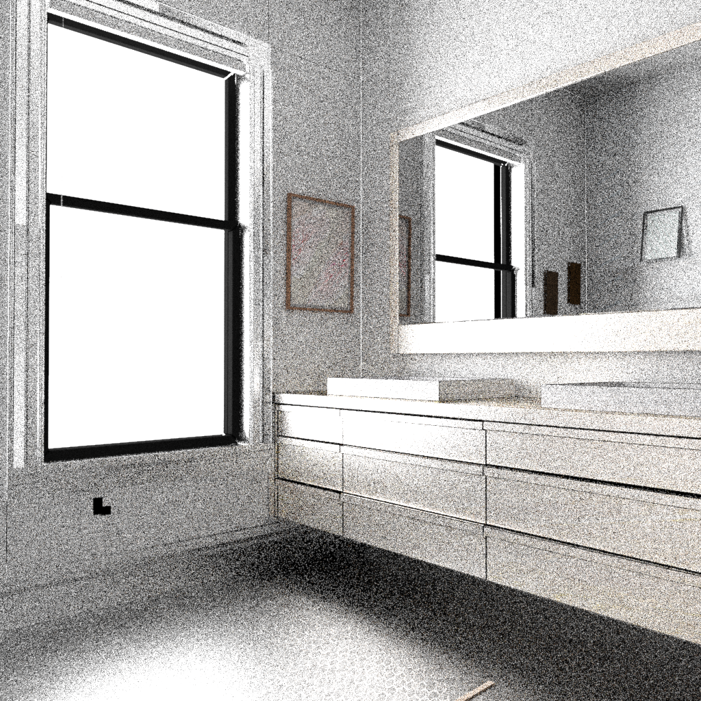
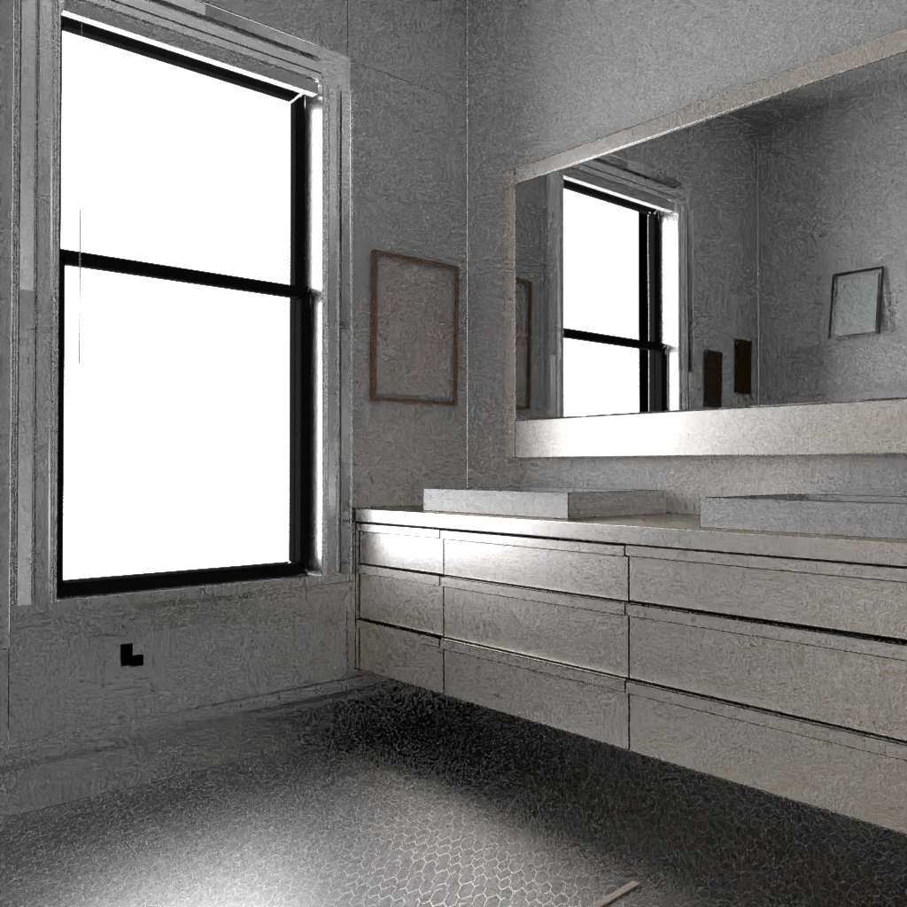

Basic Ray Tracing Renderer
About
A CPU-based ray tracer developed from scratch using C++ and DirectX 11. This project explores advanced rendering concepts found in the PBRT book, implementing physically based materials and various global illumination algorithms.
Rendering Algorithms
Three algorithms are implemented in this ray-tracer: Monte Carlo Path Tracing, Light Tracing, and Instant Radiosity.
Path Tracing

Light Tracing

Instant Radiosity

Materials
Multiple material brdf are implemented in this ray-tracer, including diffuse (OrenNayar), metal (Conductor), plastic (Phong), glass (Fresnel), specular (Mirror) etc.

Multiple Importance Sampling
Multiple Importance Sampling (MIS) is a technique used to improve the convergence of Monte Carlo integration by combining different sampling strategies.


Performance Optimizations
- Multithreading: Utilizing multiple CPU cores to render tiles independently.
- Adaptive Sampling: Focusing computational resources on areas with higher variance.
- BVH: Bounding Volume Hierarchy to accelerate ray-object intersection.
- Intel OIDN: AI-based denoising for high-quality results with fewer samples.
Future Work
Photon Mapping Optimization
Currently implementing and optimizing Photon Mapping to better handle caustics and difficult lighting scenarios (SDS paths).
CPU to GPU Porting
Porting the core path tracing architecture from CPU to GPU (CUDA/OptiX) to leverage parallel computing power for real-time rendering performance.